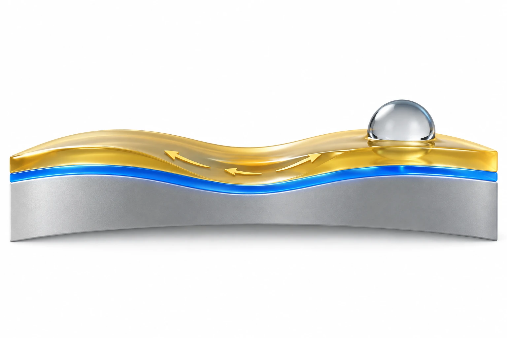

Overview
This study presents SLIME (Swift Lubrication for Industrial and Medical Equipment), a two-step dip coating that forms a physically adsorbed perfluoropolyether (PFPE) base layer and a mobile PFPE lubricant layer in about 10 s, developed by the BLISS Lab (Jungmok Seo) at Yonsei University. The coating gave a uniform contact angle of about 110° on 12 substrate materials and lowered the friction coefficient from 0.22 to 0.08.
Background
Functional coatings that reduce friction or fouling often require complex fabrication, specialized equipment or multi-step processes, and most address a single function. Lubricant-infused coatings combine low friction with anti-fouling, but retaining the lubricant has relied either on micro- or nanoscale surface texturing by lithography or plasma processing, which is costly and difficult on complex geometries, or on chemical surface modification, which adds treatment steps and limits material compatibility.
Design and approach
SLIME uses two dipping steps without surface structuring, pre-treatment or curing. The substrate is first dipped in a volatile hydrofluoroether solution of low-molecular-weight PFPE (Mw ≈ 600–1000 g mol−1); the solvent evaporates within about 3 s, and the PFPE adsorbs conformally through van der Waals forces to give a thin, low-surface-energy base layer. A higher-molecular-weight PFPE (Mw ≈ 3000–4000 g mol−1) is then applied as a neat liquid, which wets the fluorophilic base layer and forms a physically confined but mobile lubricant layer held only by non-covalent interactions. The authors propose that this mobility lets the lubricant flow back over abraded regions. In the experiments, the base solution and activation liquid were Lynk Solutec products (Lynksolution A1 and A2).

AI-generated concept: SLIME's lower-molecular-weight PFPE base is distinguished from its higher-molecular-weight mobile lubricant. Arrows show possible movement of remaining liquid, not repair of solid cracks or a measured recovery flow.
Generated for this library to illustrate the design; it is not a figure from the paper and does not show measured data.
How it was evaluated
The coating was characterized by X-ray photoelectron spectroscopy (XPS), surface profilometry, atomic force microscopy and UV–visible transmittance, and wetting was measured on 12 materials including polymers, glass, silicone and metals, with six test liquids including blood and mucus. Fouling was assessed with blood droplets, 24 h incubation with Escherichia coli and Bacillus cereus, and bovine serum albumin after 72 h of orbital shaking in water. Durability tests included cotton swab abrasion against a fluorosilane self-assembled monolayer control, bending and twisting of coated PET, ASTM D3359 tape peeling, and immersion of aluminum in 2% HCl and 3% NH4OH for up to 12 h. Applications covered PDMS casting in 3D-printed and microneedle molds, cosmetic containers, and surgical scissors and sutures. Biocompatibility was tested indirectly with NIH-3T3 fibroblasts in a transwell system and by subcutaneous implantation of coated PDMS scaffolds in 5-week-old female ICR mice (n = 3).
Key results
The coating was less than 99.6 nm thick with a roughness of Ra = 1.2 nm and kept visible transmittance above 95%, and XPS showed CF2 and CF3 peaks at about 689 eV. After coating, all 12 materials showed a contact angle of about 110°, and the six test liquids slid at less than 15° in the Results, whereas the Introduction and Conclusion state a sliding angle below 8°. Blood rolled off tilted coated glass, Eco-flex and PP without staining. After 24 h, bacterial attachment fell by 62.9% for E. coli and 91.2% for B. cereus compared with bare substrates; the Methods name Bacillus subtilis as the Gram-positive strain. The friction coefficient decreased from 0.22 to 0.08, a 64% reduction, in tests with a 3 mm zirconia ball under a 2 gf load.
After at least 20 swab strokes, water droplets still rolled off coated glass, whereas droplets pinned on the self-assembled monolayer control. Coated PET kept its blood repellency after more than 10 bending and twisting cycles and kept consistent contact and sliding angles after 100 cycles, contact angles did not change significantly after 10 tape peels, and coated glass remained essentially free of albumin after 72 h of shaking in water. In 2% HCl, bare aluminum corroded immediately, while coated aluminum showed no visible corrosion for the first 6 h, gas bubbles at the edges after 8 h and localized corrosion at the perimeter by 12 h; the authors described this protection as time-limited.
In PDMS casting on 3D-printed molds, the cured cross-sectional area increased from 50.1% to 95.2%, reported as a 90% improvement in mold release efficiency, and microneedles cast from molds treated with the base coat alone had sharper tips, summarized as a 20% improvement in tip sharpness. Coated cosmetic containers dispensed 96% of their contents compared with 81% for bare containers, corresponding to a 74% reduction in residue in the Results and 75% in the Introduction and Conclusion. Surgical scissors used in mouse surgery showed a blood adhesion area of 6.4% when coated and 15.8% when bare, and coated sutures retained almost no blood; the Introduction and Conclusion give an 86% reduction in blood-stained area on surgical tools.
Most NIH-3T3 fibroblasts remained alive for up to 5 days in transwell co-culture, and proliferation, fluorescence intensity and cell aspect ratio did not differ significantly from controls. In mice implanted subcutaneously with coated PDMS scaffolds, plasma ALT and AST measured on days 0, 1 and 7 remained within normal ranges, and H&E sections of the heart, liver, kidney and lung on days 1 and 7 showed no signs of inflammation or tissue damage.
Open questions
The authors stated that further studies are needed to evaluate long-term stability under extreme conditions and to optimize adhesion on highly porous surfaces, and they noted that protection against acid is time-limited under prolonged exposure. The in vivo assessment covered systemic markers and organ histology over 7 days with n = 3 mice per reported group.
Related research
Bioinspired self-repairing slippery surfaces with pressure-stable omniphobicity
The published abstract describes slippery liquid-infused porous surfaces (SLIPS), in which nano- or microstructured substrates lock an infused lubricating fluid in place and the surface restores liquid repellency after physical damage. SLIME retains its lubricant differently: a mobile high-molecular-weight PFPE layer rests on a physically adsorbed low-molecular-weight PFPE base layer formed by dip-coating, without surface texturing.
Abstract-based introductionSources used in this summary
This summary is based on the main text, figure legends and Experimental Section of the open-access version of record in Advanced Materials Interfaces (12 pages); the supporting information and movies were not reviewed, and several summary figures in the Introduction and Conclusion (sliding angle, residue and blood-stain reductions) differ from the values in the Results, as noted in the text.